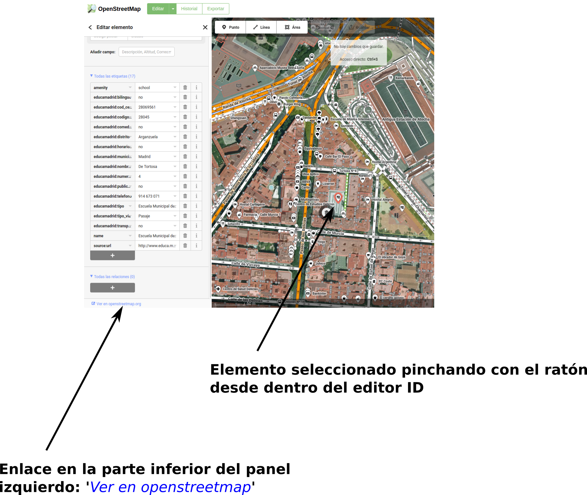

Overpass API
Descargas selectivas desde OpenStreetMap
Santiago Higuera

- Santiago Higuera
- @shiguera
- Profesor en Teleco Campus Sur
- Participo en:
- Publico en:
- eMail: santiago.higuera@upm.es
Enlaces a la documentación
- Esta presentación:
https://shiguera.github.io/overpassapi/#/ - Curso OSM:
http://iceosm2017.readthedocs.io - El portal de Overpass:
http://overpass-api.de/index.html - El lenguaje QL:
http://wiki.openstreetmap.org/wiki/Overpass_API/Overpass_QL - Guía del lenguaje Overpass y ejemplos:
http://wiki.openstreetmap.org/wiki/Overpass_API/Language_Guide
Overpass API
Overpass es una WEB API para la realización de consultas a la base de datos de OpenStreetMap
Overpass API dispone de dos lenguajes de consultas:
- Overpass XML: pensado para su utilización desde lenguajes de programación
- Overpass QL: se puede utilizar desde lenguajes de programación pero también desde portales Front End, por ejemplo Overpass Turbo
En esta charla enseñaremos a utilizar Overpass QL
Esquema de una consulta
Consultas y sentencias
Cada consulta (query) está compuesta por una o más sentencias.
Cada sentencia termina en ; (punto y coma).
El Estado de Ejecución
El conjunto de datos que se obtiene como resultado de cada sentencia se guarda en el conjunto por defecto, salvo que se designe otro conjunto con nombre para ello.
Estado de ejecución: Se compone del conjunto por defecto, otros conjuntos con nombre y una pila para los bloques de sentencias
Arquitectura en tubería (pipe)
Las sentencias se ejecutan una trás de otra.
El conjunto de datos que se obtiene como resultado de una sentencia pasa, como entrada de datos, a la siguiente sentencia.
Cada sentencia se ejecuta sobre el estado de ejecución, esto es, sobre el conjunto de datos que recibe como entrada
Tipos de sentencias
Las sentencias pueden ser de varios tipos:
- Sentencias independientes: sentencias completas por sí mismas. El resultado afecta al estado de ejecución
- Filtros: forman parte de otra sentencia. Hay filtros y selectores
- Sentencias de bloque: agrupan varias sentencias. Hay bifurcaciones y bucles
- Settings: Se establecen una vez al principio, por ejemplo, el formato de salida de datos
- Action: por ejemplo print, cuyo efecto es en la salida, no en el estado de ejecución
El portal Overpass Turbo
http://overpass-turbo.eu/
Nodes contenidos en un rectángulo
node(40.4447, -3.7344, 40.4487, -3.7301); out;
Rectángulos (Bounding Box)
Podemos definir el rectángulo (Bounding Box) de dos maneras:
- Explícitamente
- (minlat , minlon, maxlat, maxlon)
- Rectángulo de pantalla (Overpass Turbo)
- { { bbox } }

Opciones de Overpass Turbo
- Run: ejecuta la consulta que esté en el editor y muestra el resultado en la pantalla del mapa. Hay que pulsar sobre la lupa para que centre la vista
- Share: ofrece un enlace para recuperar la consulta con un navegador
- Export: guarda en disco el resultado de la consulta en diferentes formatos. Permite guardar el mapa, como imagen png, o como mapa interactivo. También podemos grabar el texto de la propia consulta.
- Wizard: ayuda a crear consultas
- Save: guarda en el propio navegador una consulta
- Load: recupera una consulta guardada anteriormente
- Settings: permite configurar las opciones del programa
- Help: ayuda del programa
- Map-Data: permite seleccionar que la salida de resultados de una consulta se muestre sobre el mapa o como texto en formato OSM XML
Traducción entre distintos formatos
En este portal se pueden probar sentencias y también traducirlas entre distintos formatos
http://overpass-api.de/query_form.htmlSelección de un elemento por su ID
node(805202229); out;
¿Cómo saber el ID de un elemento?
Podemos localizar el elemento en el mapa, luego activar la edición con el editor ID (Hay que ser usuario registrado de OpenStreetMap) y finálmente pinchar en el enlace Ver en openstreetmap
Acceder a un elemento por ID en OSM
Tambiénpodemos acceder a la información de un elemento del que conocemos su ID desde dentro del propio mapa de OpenStreetMap
Nodes con una etiqueta determinada (I)
node({{bbox}})['highway'='bus_stop']; out;
nodes que son parada de autobus
Nodes con una etiqueta determinada (II)
node({{bbox}})['shop'='books']; out;
nodes que son librerías
Nodes con una etiqueta determinada (III)
node({{bbox}})['aeroway'='aerodrome']; out;
nodes que son aeródromos
Nodes por el valor de dos etiquetas
Podemos poner como condición que el valor de dos o más etiquetas esté determinado, por ejemplo, para encontrar el Restaurante ‘El Albero‘ de Moralzarzal:
node(40.6631, -4.0142, 40.6927, -3.9468)["amenity"="restaurant"]
["name"="El Albero"];out;
También podríamos encontrarlo sin especificar el bounding box, solo por etiquetas:
node["amenity"="restaurant"]["name"="El Albero"];out;
Recursividad
- Nodes de un conjunto de Ways
- Nodes o Ways de un conjunto de Relations
- Ways que tienen determinados Nodes como miembros
- Relations que tienen determinados Nodes o Ways como miembros
- Hacia arriba (atrás): <
- Hacia abajo (adelante): >
Nodes de una Relation
Paradas de autobus de la línea H12: Gornal => Besòs-Verneda (4799268)
rel[ref="H12"];node(r);out;
Si se conoce el id:
rel(4799268);node(r);out;
Ways de una Relation
Línea de autobus de la línea H12: Gornal => Besòs-Verneda (4799268)
rel(41.3282,2.0160,41.4454,2.2443)[ref="H12"];way(r);out;
Los Nodes de las ways anteriores:
rel(41.3282,2.0160,41.4454,2.2443)[ref="H12"];way(r);node(w);out;
Ways incluyendo los Nodes:
rel(41.3282,2.0160,41.4454,2.2443)[ref="H12"];way(r);(._;>;);out;
Ways con recursividad a nodos para que se vean las líneas
La carretera M-607:
way(40.6573,-3.9610,40.7169,-3.7423)["ref"="M-607"];(._;>;);out;
Todos los ways con la etiqueta building=house de una determinada zona:
way(40.67441, -3.97063, 40.67812, -3.96221)["building"="house"];(._;>;);out;
Ways de una Relation
Todas las ways de Madrid referenciadas en la relación de ref=M-40:
relation(40.3091,-3.7707,40.5420,-3.5702)["ref"="M-40"];way(r);out;
La misma petición, pero con sus Nodes
relation(40.3091,-3.7707,40.5420,-3.5702)["ref"="M-40"];way(r);(._;>;); out;
Elementos a una distancia
Nodes a una distancia de un punto de coordenadas conocidas:
node(around:100.0,41.9837,2.8243);out;
Farmacias a menos de un kilómetro de la Plaza del Carmen, en Madrid:
node(around:1000.0,40.41876,-3.70331)["amenity"="pharmacy"];out;
Bares a menos de 500 metros de la iglesia de Moralzarzal (por Id):
way(132527765);node(around:500)["amenity"="bar"];out;
Unión de dos conjuntos de datos
Se encierran entre paréntesis las dos sentencias cuyos conjuntos de salidas queremos unir, separadas por punto y coma
(node({{bbox}})['aeroway'='aerodrome'] ;
way({{bbox}})['aeroway'='aerodrome'];); (._;>;); out;
Nodes y Ways que son aeródromos
Unión: más ejemplos
La siguiente sentencia solicita los Nodes con ‘amenity=restaurant’ o ‘amenity=pub’ del barrio de Salamanca, en Madrid:
(node(40.4232,-3.6918,40.4378,-3.6793)["amenity"="bar"];
node(40.4232,-3.6918,40.4378,-3.6793)["amenity"="pub"];);out;
Otro ejemplo sería 'todos los edificios y piscinas de una zona':
(way(40.67441, -3.97063, 40.67812, -3.96221)["building"="house"];
way(40.67441, -3.97063, 40.67812, -3.96221)["leisure"="swimming_pool"]);
(._;>;);out;
Ejemplo de Node en formato OSM
<node id="25496583" lat="51.5173639" lon="-0.140043" version="1" changeset="203496"
user="80n" uid="1238" visible="true" timestamp="2007-01-28T11:40:26Z">
<tag k="highway" v="traffic_signals"/>
</node>
Ejemplo de Way en formato OSM
<way id="5090250" visible="true" timestamp="2009-01-19T19:07:25Z" version="8"
changeset="816806" user="Blumpsy" uid="64226">
<nd ref="822403"/>
<nd ref="21533912"/>
<nd ref="821601"/>
<nd ref="21533910"/>
<nd ref="135791608"/>
<nd ref="333725784"/>
<nd ref="333725781"/>
<nd ref="823771"/>
<tag k="highway" v="residential"/>
<tag k="name" v="Clipstone Street"/>
<tag k="oneway" v="yes"/>
</way>
THE END
by @shiguera de Geoinquietos Madrid

Esta obra está bajo una Licencia Creative Commons Atribución-NoComercial-CompartirIgual 3.0 Unported.